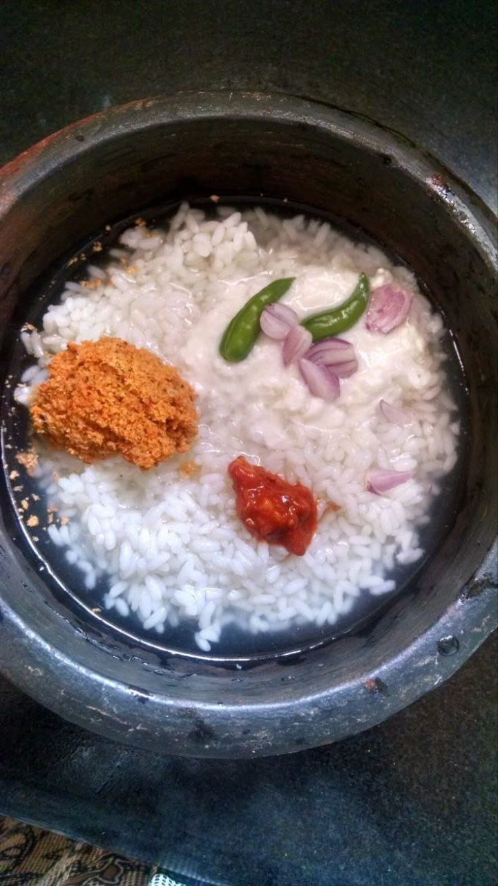

Panta Bhaat with Shutki Bharta

Ingredients:
- Cooked rice soaked overnight in water
- 100g dried fish (shutki)
- 1 onion (chopped)
- 2 green chilies (chopped)
- 2 tbsp mustard oil
- Salt to taste
Instructions:
- Fry shutki until crispy and mash it.
- Mix mashed shutki with onions, green chilies, mustard oil, and salt.
- Serve with panta bhaat (soaked rice).
Back to Recipes